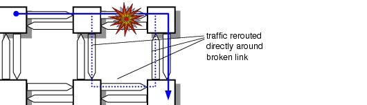
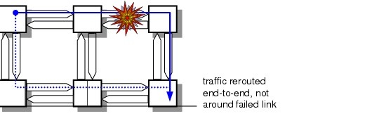

Dimensioning > Dimension DCL/OCH Layer Dialog Box > Protection Strategies
Protection Strategies
You can dimension a network with or without reserving spare capacity for failure recovery. The following dimensioning strategies are available:
Unprotected Dimensioning
In unprotected dimensioning, SP Guru Transport Planner routes the traffic without protection using either the shortest-path, heuristic-optimization, or diverse-routing algorithm, as described in Dimensioning Algorithms.
Protected Dimensioning
1 + 1 Protected Dimensioning
If the Protection option is set to 1 + 1 Protection, SP Guru Transport Planner calculates the shortest cycle for each connection (using the lowest-cost pair of disjoint routes between the end nodes) and dimensions the network based on the lowest-cost cycles. The dimensioning allocates enough capacity to route the connections using 1+1 protection.
You can specify the degree of disjointness of the working and protections paths for each connection. You can specify the network layer down to which you want to guarantee link disjointness, as described in Link Disjointness for Working and Protection Paths.
If the Node Disjoint option box is selected, SP Guru Transport Planner ensures that the paths are both node and link disjoint. If this option is not selected, SP Guru Transport Planner ensures only that the paths are link disjoint.
You can specify that the traffic is client-protected. If the Client Protection check box is checked, protection switching occurs at the client side and the client hands off two interfaces that should be disjointly routed. If this option is not selected, the client hands off one interface and protection switching occurs in the network.
Shared Path Protection
If the Protection option is set to Shared Path, SP Guru Transport Planner uses a fixed dedicated working path and a fixed—but shared—protection path for each connection.
With shared path protection enabled, the protection path is fully disjoint from the working path; however, SP Guru Transport Planner sets up the protection path only when a failure occurs (in contrast with 1 + 1 protection). As a result, the required capacity for one protection path can be shared with other protection paths. The dimensioning algorithm ensures that the network can restore all traffic if one link fails.
The two Protection fields specify an M:N protection ratio. This specifies that at most M working paths (left field) can share N protection units (right field) along their protection paths.
Link and Path Restoration
The restoration strategy has two steps:
- SP Guru Transport Planner calculates the required capacity to accommodate the working paths of the selected traffic matrix in the network. For this purpose SP Guru Transport Planner routes along the lowest-cost path (as defined by the Routing Cost setting).
- SP Guru Transport Planner adds enough restoration capacity to ensure that, in the event of any one link failure, the network can restore all connections fully.
You can specify either Link Restoration and Path Restoration modes when using Restoration dimensioning.
Link Restoration
Figure 7-2 shows the principle of link restoration. When a link fails, the network reroutes the traffic between the end-nodes of the failed link. This strategy typically consumes a lot of spare capacity near the failed link; however, the same spare capacity can often protect multiple links. In some cases the final route traverses the same link in both directions.
Figure 7-2 Link Restoration (Example)

The dimensioning algorithm for link restoration ensures that the network can restore all traffic if one link fails. The traffic can share the spare capacity needed to survive different single link failures. However, if multiple links fail simultaneously, the network probably cannot restore all traffic.
Note—This algorithm restores traffic affected by failed links only. It cannot restore traffic affected by failed nodes.
Path Restoration
Figure 7-3 shows the principle of path restoration. A link failure results in multiple path failures, and path restoration reroutes each of these paths between their end nodes. The network re-routes the traffic between source and destination, regardless of where the link failure occurred. Therefore, the new path might not be near the failed link.
Figure 7-3 Path Restoration

The dimensioning algorithm for end-to-end path restoration guarantees that for all single link failures, the corresponding affected connections can be restored through an end-to-end diverse route. Note that this algorithm might not find a unique set of restoration paths, independent of the failing link, for each connection.
Path restoration differs from shared-path protection in that path restoration might have different backup paths, depending on the failure. (With shared path protection, the protection path is fully disjoint from the working path; thus the protection path is fixed and independent of the failure.) Path restoration is also more flexible in surviving from multiple failures.
Note—Both link and path restoration use an amount of shared restoration capacity per traffic matrix that is using link or path restoration. This means that connections within the same traffic matrix can share the restoration capacity of that traffic matrix. However, connections of different traffic matrices cannot share the same restoration capacity.
| Home © 1987-2007 OPNET Technologies, Inc. All Rights Reserved. This software may be covered by one or more U.S. Patents. See complete patent notice in the Legal Notices section. OPNET Support Center |